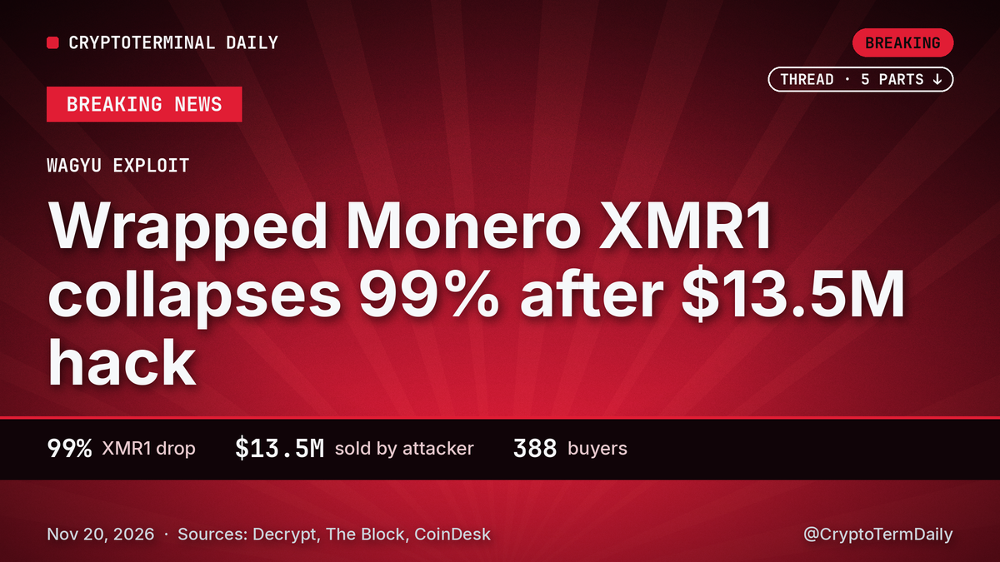

How a deleted server may have emptied a Monero bridge

A wrapped token collapses in half an hour
On Friday, XMR1 went from roughly $500 to around $1 in about half an hour, a drop of more than 99%. The token is issued by Wagyu, a cross-chain swap service, and it stands in for Monero on the Hyperliquid exchange. Monero runs on its own blockchain and cannot trade natively there, so Wagyu takes deposits of the real coin and hands out XMR1 that holders can later redeem. When confidence in that promise breaks, the wrapper can fall to near zero while the underlying coin barely notices. That is what happened. Native Monero itself was not affected by the exploit.
What the chain data shows
Onchain firm Bitquery traced the sequence. Early Friday, the deployer account moved 5.2 million XMR1 into a fresh account. That account then sold about 364,000 of the tokens to 388 buyers and collected $13.5 million. The attacker converted the proceeds into ETH, and at Bitquery's last check about 7,350 ETH sat in three wallets.
One detail stands out. The attacker's account received its first funds from the crypto mixer Tornado Cash only minutes before it was set up. Someone planned this and covered their tracks from the first transaction.
The founder's explanation
Wagyu's pseudonymous founder, who goes by PerpetualCow, pointed at 1984.hosting, a hosting company based in Iceland, saying it had been breached. In his account, the key that controlled the XMR1 deployer wallet was kept on an old server there. He had deleted that server, but the host apparently held on to its logs and files. His own lesson was that hosting providers keep your data even after you terminate a server.
There is a second piece of evidence on his side. The company behind the hosting service, 1984 ehf., said it suffered an extensive and serious cyberattack on its IT infrastructure, according to Icelandic outlet DV, which cited a joint statement with CERT-IS, the national cybersecurity incident response team. Early findings pointed to a well-organized and technically sophisticated attack. The company said it could not rule out that more systems were affected than it had confirmed, and it shut down all services for the time being.
What is still unproven
The two stories line up, but nobody has tied them together yet. The hosting company's statement did not mention Wagyu, and it did not say whether customer data was taken. Bitquery added a caution of its own: onchain data alone cannot show whether the deployer's key was actually stolen. It also cannot see how much Monero backs the XMR1 that remains, because the Monero side of the bridge is invisible from Hyperliquid. In other words, the public cannot currently audit whether the remaining tokens are redeemable.
A pattern of warning signs
This was not Wagyu's first security problem. It disclosed a separate data leak in October and said at the time that funds were unaffected. Earlier in November the service also surfaced in an investigation by ZachXBT into a suspected $106 million theft from an unnamed European entity, where part of the funds were converted to Monero through the service. Those events are separate from Friday's exploit, and nothing in the reporting says they are connected, but they show a service that was already drawing scrutiny.
What to watch next
PerpetualCow promised to pay back every holder who lost money out of his own pocket, and said Wagyu would come back at some point. He gave no timeline, only a request for time. A personal promise is not a funded compensation plan, and the reporting does not say where the money would come from.
The other thing to watch is ZEC1, a Zcash token. The same deployer account still controls nearly all of it. If the key is compromised, the same exposure applies there, and the token carries the same bridge structure as XMR1.
Our take
The lesson is about custody, not about Monero. A wrapped asset is only as safe as the key that controls its issuance, and here that key reportedly lived on a server that its owner believed no longer existed. Traders who bought XMR1 were trusting a pseudonymous operator's housekeeping, and that trust cost 388 buyers dearly.